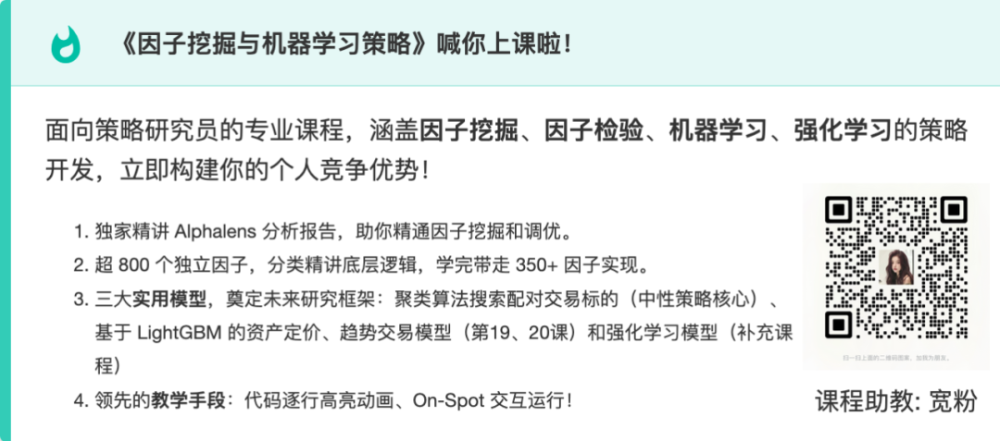

最近我看了一个开源项目，叫 daily_stock_analysis，在 GitHub 上已经有 31k stars。
如果只看名字，你会以为它只是又一个“AI 帮你分析股票”的工具。但把 README 从头到尾看完，我反而觉得，它真正有意思的地方，不在“AI”这两个字，而在它试图解决一个更底层的问题：
投资里最稀缺的，从来不是信息本身，而是把信息稳定地处理成判断的能力。
市场里不缺信息。A 股、港股、美股，行情、公告、资金流、新闻、舆情、技术面、基本面，每天都在爆炸式更新。普通人真正吃亏的地方，很多时候不是完全不知道发生了什么，而是知道得太碎，反应得太快，最后把判断做成了情绪。
所以这个项目真正想做的，不是“替你炒股”，而是把原本零散、重复、容易受情绪干扰的分析动作，收成一套可以自动运行、自动推送、自动回看、还能不断补强的流程。
它到底在做什么
简单说，这个项目会每天自动分析你的自选股，然后把结果整理成一份“决策仪表盘”发给你。
这里的关键词不是“日报”，而是“仪表盘”。
它不是只给你一句“看多”或者“看空”，而是尽量把下面这些东西放在一起：
• 一句话核心结论 • 买入价、止损价、目标价 • 风险提示 • 操作检查清单 • 技术面、资金流、舆情、公告等多维信息
这一点很关键。因为很多所谓 AI 股票工具，只是把一堆数据喂给模型，再吐出一段看起来像分析的文字。而这个项目往前走了一步，它试图把“信息”变成“判断入口”。这两者差别很大。前者只是描述，后者才开始接近决策支持。
它覆盖的，不只是个股分析
从 README 来看，这个项目已经不是一个单点脚本，而是一套比较完整的工作流：
• 支持 A 股、港股、美股，以及部分美股指数 • 可以做个股分析，也可以做大盘复盘 • 内置市场策略系统，A 股有“三段式复盘策略”，美股有 Regime Strategy • 支持历史报告详情、完整 Markdown 报告、纯文本复制 • 支持 AI 回测验证，能看历史分析和次日实际表现之间的偏差 • 支持策略问股，像聊天一样按某种策略框架问一只股票 • 支持持仓、历史记录、设置、通知发送等完整 Web 工作台
这说明它已经不只是“爬数据 + 调大模型”的 demo，而是在往一个可持续使用的投研工作台走。
真正的难点，不是 AI 会不会说，而是系统能不能长期跑
我觉得这项目最有深度的地方，不在模型输出了多少术语，而在它认真处理了那些最容易被忽略、但在金融场景里又最致命的问题。
比如数据源。
项目接入的不是一个单一行情源，而是一整套组合：
• 行情数据： AkShare、Tushare、Pytdx、Baostock、YFinance、Longbridge• 新闻搜索： Anspire、Tavily、SerpAPI、Bocha、Brave、MiniMax• 社交舆情： Stock Sentiment API，覆盖 Reddit、X、Polymarket，仅美股可选• AI 模型： AIHubMix、Gemini、OpenAI兼容接口、DeepSeek、通义千问、Claude、Ollama
这些名字看起来像“堆料”，但真正重要的不是接得多，而是它背后的逻辑：金融系统最怕单点失效。
接口限流、字段缺失、搜索失效、模型不稳，这些在普通工具里可能只是“小问题”；但在金融分析里，它们会一路传导，最后变成错误结论。所以 README 里反复强调兜底、回退、降级、缓存、字段契约，我觉得这不是工程洁癖，而是可信度的一部分。
它连数据路由都不是随便写的
这套系统里，数据路由有明确优先级。
比如美股和港股，如果配置了 LONGBRIDGE_APP_KEY、LONGBRIDGE_APP_SECRET、LONGBRIDGE_ACCESS_TOKEN，那么日线 K 线和实时行情优先走 Longbridge；失败或者字段不全，再由 YFinance或 AkShare补上。美股大盘指数如 SPX始终优先走 YFinance，因为长桥本身不提供指数行情。
A 股这边的路由则保持为：
Efinance -> AkShare -> Tushare -> Pytdx -> Baostock
而且 Tushare现在还增加了港股查询能力，只要配置 TUSHARE_TOKEN且账户本身有港股日线权限，首页直接输入港股代码也能正常分析。
这种写法说明它不是“为了能跑一次”而写，而是在处理一个真正上线后会遇到的问题：不同市场、不同权限、不同接口，能力边界并不一样。
这个项目其实在做一件更难的事：把感觉外化成流程
我觉得真正值得琢磨的，不是它会不会写分析，而是它试图把原本依赖个人经验、个人状态的判断过程，外化成一套更可复盘的结构。
比如它内置了交易纪律：
• 乖离率超过阈值默认提示“严禁追高” • 趋势交易要求 MA5 > MA10 > MA20• 明确给出买入价、止损价、目标价 • 检查清单按“满足 / 注意 / 不满足”标记 • 新闻时效默认只看近 3 天，避免拿旧信息支撑新判断
这看上去像规则，其实更像在对抗人性的波动。因为普通人真正的问题，往往不是完全不懂，而是懂了也不稳定。今天知道不能追高，明天盘中一激动还是会追；知道该先看公告和资金流，最后却还是被涨跌牵着走。
所以这类工具真正的价值，不是让你不犯错，而是尽量让你别因为低级混乱而犯错。
GitHub Actions 这一段，才是它“产品意识”最强的地方
README 里我最喜欢的一部分，其实不是模型，而是部署。
项目给出的推荐方案是 GitHub Actions，目标非常直接：
5 分钟完成部署，零成本，无需服务器。
流程也很简单：
1. Fork 仓库 2. 在 Settings -> Secrets and variables -> Actions里配置 Secrets3. 启用 Actions 4. 手动跑一次 workflow 测试
默认每个工作日北京时间 18:00自动执行，也支持手动触发。非交易日默认不跑，但你可以用两种方式跳过交易日检查：
• 全局关闭： TRADING_DAY_CHECK_ENABLED=false• 单次强制：Actions 手动触发时勾选 force_run
这件事为什么重要？因为它把门槛压得非常低。很多人不是不想用自动化工具，而是听到“部署”“服务器”“定时任务”“环境变量”就放弃了。这个项目很清楚地知道，能不能让普通人先跑起来，本身就是产品能力的一部分。
当然，README 也不是只给了 GitHub Actions 这一条路。它还提供了第二种方式：本地运行 / Docker 部署。
最基础的本地运行流程就是四步：
# 克隆项目
git clone https://github.com/ZhuLinsen/daily_stock_analysis.git && cd daily_stock_analysis
# 安装依赖
pip install -r requirements.txt
# 配置环境变量
cp .env.example .env && vim .env
# 运行分析
python main.py如果你不用 Web，README 还专门给了一套更直接的模型渠道写法，建议直接在 .env里按条配置：
LLM_CHANNELS=primary
LLM_PRIMARY_PROTOCOL=openai
LLM_PRIMARY_BASE_URL=https://api.deepseek.com/v1
LLM_PRIMARY_API_KEY=sk-xxxxxxxx
LLM_PRIMARY_MODELS=deepseek-chat
LITELLM_MODEL=openai/deepseek-chat这样写的好处是简单、直接，不需要额外再维护一套配置文件。保存之后，如果你后面又切回 Web，也可以在 Web 设置页继续编辑同一组字段，两边是打通的。
README 这里还补了一句很重要的话：如果你同时启用了高级模型路由 YAML，也就是 LITELLM_CONFIG，那么 YAML 主要负责定义可用模型和路由规则，也就是 model_list；但真正运行时的主模型、备选模型、Vision、Temperature，还是由这些字段决定：
• LITELLM_MODEL• LITELLM_FALLBACK_MODELS• VISION_MODEL• LLM_TEMPERATURE
也就是说，渠道编辑器保存的是“渠道条目”，不会覆盖这些运行时字段的选择。这种区分其实挺重要，因为很多人一旦同时混用页面配置、.env和 YAML，最容易搞不清到底谁在真正生效。
再往下走，如果你打算用 Docker，README 也专门提醒了两个很容易踩坑的点。
第一，Docker 部署和定时任务配置要去看完整指南，桌面客户端打包则要看桌面端打包说明。
第二，Docker 版本号不要看错。真正应该认的是你实际拉取或运行的镜像 tag，比如 v3.12.0。因为仓库里的 Docker 发布是由 .github/workflows/docker-publish.yml按 v*.*.*的 Git tag 触发的，而 apps/dsa-web/package.json里的 0.0.0只是占位版本，不代表真实的 Docker 发布版本。这种提醒很细，但很有用，因为很多人排查问题时，第一步就会先把版本看错。
配置很多，但不是乱
这个项目的配置项非常多，但大体上是分层的。
最核心的几层包括：
模型层
• AIHUBMIX_KEY• GEMINI_API_KEY• ANTHROPIC_API_KEY• ANTHROPIC_MODEL• OPENAI_API_KEY• OPENAI_BASE_URL• OPENAI_MODEL• OPENAI_VISION_MODEL• OLLAMA_API_BASE
模型统一通过 LiteLLM调用，多模型时推荐使用：
LLM_CHANNELS + LLM_<NAME>_PROTOCOL/BASE_URL/API_KEY/MODELS/ENABLED
如果你要显式指定主模型或备选模型，再额外配置：
• LITELLM_MODEL• LITELLM_FALLBACK_MODELS
这里 README 还特别提醒了几个坑：
• AI 优先级默认是 Gemini > Anthropic > OpenAI（含 AIHubMix）> Ollama• AIHUBMIX_KEY不需要再配置OPENAI_BASE_URL• 图片识别必须用支持 Vision 的模型 • DeepSeek的思考型模型会按模型名自动识别• Ollama本地模型必须走OLLAMA_API_BASE，误用OPENAI_BASE_URL会直接 404
搜索与舆情层
• TAVILY_API_KEYS• ANSPIRE_API_KEYS• MINIMAX_API_KEYS• SERPAPI_API_KEYS• BOCHA_API_KEYS• BRAVE_API_KEYS• SEARXNG_BASE_URLS• SEARXNG_PUBLIC_INSTANCES_ENABLED• SOCIAL_SENTIMENT_API_KEY• SOCIAL_SENTIMENT_API_URL
行情与增强层
• STOCK_LIST• TUSHARE_TOKEN• TICKFLOW_API_KEY• LONGBRIDGE_*全套配置
运行与策略层
• WECHAT_MSG_TYPE• NEWS_STRATEGY_PROFILE• NEWS_MAX_AGE_DAYS• BIAS_THRESHOLD• TRADING_DAY_CHECK_ENABLED• PREFETCH_REALTIME_QUOTES
Agent 层
• AGENT_MODE• AGENT_LITELLM_MODEL• AGENT_SKILLS• AGENT_MAX_STEPS• AGENT_SKILL_DIR
基本面层
• ENABLE_FUNDAMENTAL_PIPELINE• FUNDAMENTAL_STAGE_TIMEOUT_SECONDS• FUNDAMENTAL_FETCH_TIMEOUT_SECONDS• FUNDAMENTAL_RETRY_MAX• FUNDAMENTAL_CACHE_TTL_SECONDS• FUNDAMENTAL_CACHE_MAX_ENTRIES
这些配置多，但并不乱。它说明项目已经从“能跑”走到了“怎么稳定地跑，怎么针对不同用户和不同场景调节”。
它甚至把失败怎么发生都想好了
README 里有一段很多人可能会跳过，但我觉得很关键，就是基本面聚合的超时语义。
它明确写了：
• 当前采用 best-effort软超时，也就是fail-open• 超时会立即降级，继续主流程 • 不承诺严格硬中断第三方线程 • 如果业务以后需要硬 SLA，可以升级成“子进程隔离 + kill”的方案
这段话表面上像工程说明，实际上很有深度。它告诉你一件事：作者知道系统不可能永远完美，但他要做的不是假装不会失败，而是让失败以一种可控、可预期的方式发生。
这比“永远没问题”更成熟。
字段契约也一样。README 里直接把关键结构约定死了，比如：
• fundamental_context.boards.data = sector_rankings• fundamental_context.earnings.data.financial_report = 财报摘要• fundamental_context.earnings.data.dividend = 分红指标• get_stock_info.belong_boards = 个股所属板块• get_stock_info.boards作为兼容别名保留
这说明它不是在凑功能，而是在认真管理语义。
Web 界面和 Agent，说明它已经不只是“后端脚本”
项目还有完整 Web 工作台，而且这一轮界面升级很明显是往“产品”而不是“工具页”去做的：
• 浅色主题和深色主题完整重绘 • 主题切换可持久化 • 首页、问股、回测、持仓、设置统一视觉体系 • 小屏与触屏体验增强 • ADMIN_AUTH_ENABLED=true可启用密码保护
它还做了智能导入：
• 截图导入股票池，Vision AI 自动识别代码和名称 • 支持 CSV/Excel • 支持直接粘贴 • 带置信度分层确认、去重、全选、清空
首页搜索补全也不是简单匹配，而是支持：
• 股票代码 • 中文名 • 拼音缩写 • 别名
比如：
• gzmt -> 贵州茅台• tencent -> 腾讯控股• aapl -> Apple Inc.
而且它做了降级逻辑：索引失败就退回普通输入模式，不会把整条分析链路卡死。
Agent 问股这一块则更像“第二产品线”。
你可以在 /chat里按策略做多轮对话，支持均线金叉、缠论、波浪理论、多头趋势等 11种内置策略，也支持：
• 流式展示思考路径 • 导出 .md• Bot 命令调用 • 自定义 YAML 策略 • SKILL.mdbundle• 多 Agent 架构： Technical -> Intel -> Risk -> Specialist -> Decision
而且它连兼容字段都想到了，比如 capital_flow_signal只是增强字段，不返回也不影响后续阶段。
这些都说明，它已经不是一个“写完日报就结束”的项目，而是在搭一套可扩展的分析框架。
最后说结论
我觉得这个项目真正值得看的，不是“AI 会不会帮你挑出好股票”，而是它展示了一种更现实的方向：
在投资里，真正有价值的系统，不是替你取消判断，而是把原本依赖个人感觉的分析过程，变得更稳定、更可复盘、更可重复。
它当然不能替你承担市场风险，也不能保证你赚钱。
但它确实在做一件很少有人认真做的事：把分析从一种临场反应，慢慢往系统能力上搬。
这件事不热闹，不传奇，也不适合拿来吹神话。
但如果你认真做研究、认真做工具、认真看待市场，我觉得它反而比很多“AI 选股故事”更接近真实世界里长期有用的东西。
项目地址：
https://github.com/ZhuLinsen/daily_stock_analysis
